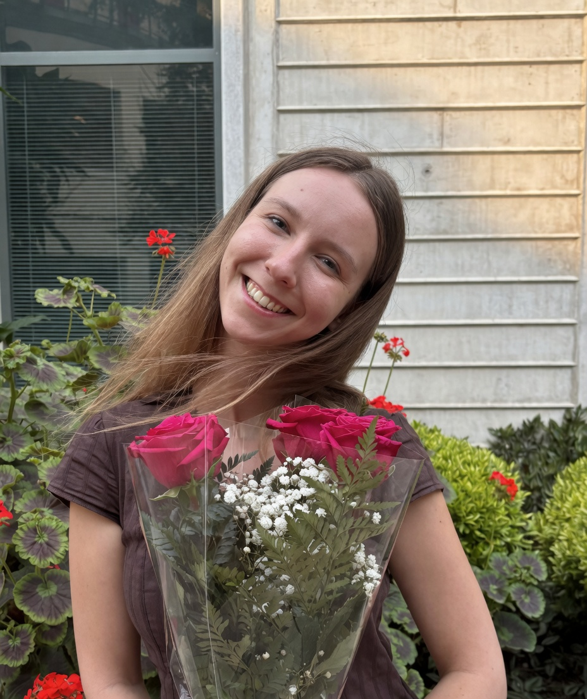

Chapter I · Field notes
Two degrees at UC Santa Barbara, half a dozen field positions, a graduate research site bridging Bolivia and the Bren School, and a working hand in everything from camera traps to bilingual analytical sites. The path is non-linear by design.

§ I.1 · The path
I'm an environmental scientist working in water pollution remediation, watershed management, and environmental data science. My academic foundation is at UC Santa Barbara — a B.A. in Environmental Studies (concentration: Water Quality & Systems) followed by an M.E.S.M. at the Bren School of Environmental Science & Management with specializations in Pollution Prevention & Remediation and Water Resource Management. The throughline has always been finding clear, defensible answers to environmental questions that resist easy ones, and communicating what the data actually means once you've found them.
I work at Applied Marine Sciences as an Environmental Scientist focused on water resources and pollution remediation. The work draws on field research, quantitative modeling, computer vision, and scientific writing in roughly equal measure.
"The water doesn't speak — but it leaves traces, and the work is learning how to read them."
§ I.2 · Formation
✦ Bren School · UCSB
Bren School of Environmental Science & Management, University of California, Santa Barbara
M.E.S.M. · graduating June 2026
Concentrations: Pollution Prevention & Remediation · Water Resource Management
✦ Letters & Science · UCSB
University of California, Santa Barbara
B.A. awarded · June 2024 · Dean's Honors
Concentration: Water Quality & Systems
§ I.3 · The throughline
The work usually begins with data — sometimes collected directly, more often acquired from existing monitoring programs or built on prior published studies with proper citation and provenance. From there comes the analytical layer: R, Python, GIS, statistical models that respect the messiness of environmental data, and machine-learning pipelines where automation earns its place. The work becomes useful at the communication layer — a peer-reviewed manuscript, a bilingual analytical site, an interactive dashboard, a watershed plan in plain English. The point isn't the analysis itself; the point is whether the result can be acted on by the people who need it.
§ I.4 · Teaching & mentorship
✦ Field mentorship · 2025
Trained and supervised two undergraduate research assistants during the 2025 pollinator monitoring field season at UCSB's North Campus Open Space restoration site — field protocol, camera system operation, and data quality review.
✦ Teaching assistantships · 2025
Teaching Assistant for three UCSB courses across the 2025 academic year: Human Physiology (MCDB 111), Molecular and Ecological Biology Laboratory (EEMB 2LL), and Biometry — a statistical-methods course taught in R (EEMB 146W). Earlier, two academic years (2021–2023) as a UCSB Disabled Students Program Proctor.
"Most environmental answers don't come clean. The rigor is in the framing."
§ I.5 · Instruments & domains